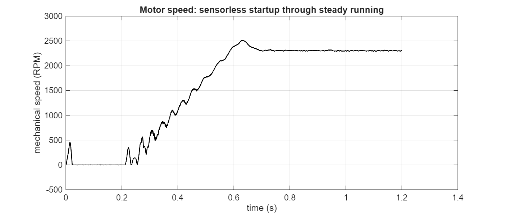
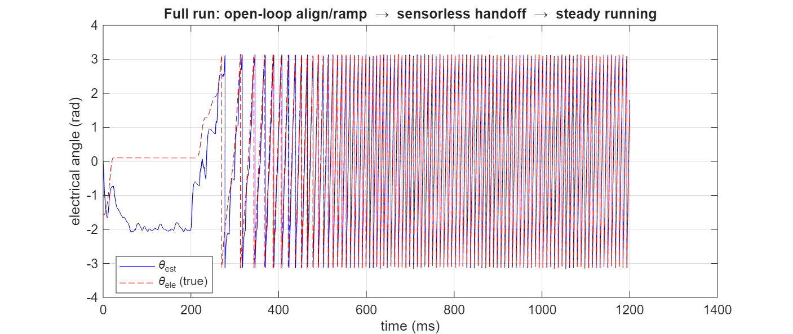
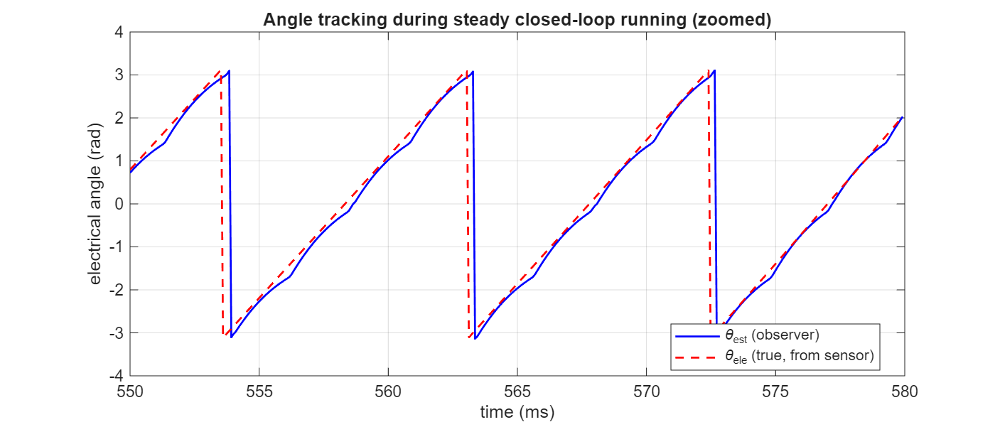
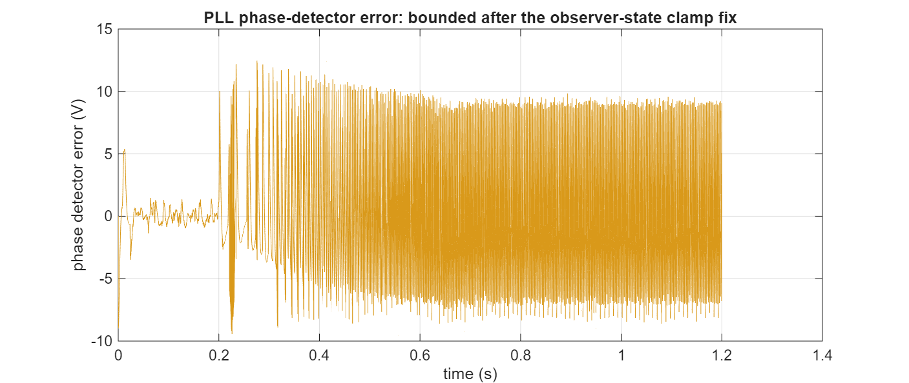
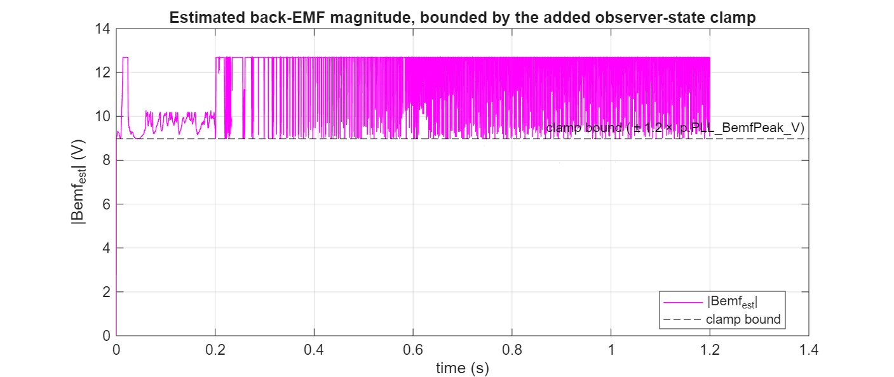

My_1SH_FOC — internal reference
What the two-stage estimator does, how it maps onto the ST firmware it was ported from, the runaway bug that broke the sensorless handoff, the fix, and what's still worth improving.
we_est waveforms look like thisThis drive doesn't have a position sensor feeding the control loop directly (a real sensor exists in this Simscape model for validation, selectable as theta_source, but the sensorless path is the one this document is about). Instead, the motor is started open-loop — forcing a known angle and current while nothing is measured yet — and control is handed over, part way through, to an angle estimated purely from the measured stator current and the voltage being commanded. That estimation is done in two stages, run back-to-back every 80 µs control cycle:
This mirrors ST's own two-function split almost exactly: ss_sto_observer_step.m is the MATLAB port of STO_PLL_CalcElAngle's Luenberger-observer half (from Src/sto_pll_speed_pos_fdbk.c in the reference firmware), and ss_pll_step.m is the port of the same function's PLL half.
In plain words: this piece knows the basic electrical equation of the motor (voltage = resistance×current + inductance×(rate of change of current) + back-EMF). Give it the voltage you're commanding and it can predict what the current should do next — but only if it already knows the back-EMF, which is exactly the thing we don't know yet. So it makes a guess, predicts the current from that guess, compares the prediction to the real, measured current, and uses the size and direction of that mismatch to nudge both its current estimate and its back-EMF guess closer to reality. Repeat 12,500 times a second and the back-EMF guess converges onto the truth.
Back-EMF isn't a fixed value — it's a sinusoid spinning at the electrical speed. If the observer only ever nudged a static guess toward the current back-EMF, it would always be chasing a moving target and lagging behind. So the model gives the back-EMF estimate its own built-in rotation, at whatever speed the PLL currently believes the motor is spinning:
Bemf_alpha_next = Bemf_alpha + Ts·we_est·Bemf_beta + G2·(current error, alpha axis)
Bemf_beta_next = Bemf_beta − Ts·we_est·Bemf_alpha + G2·(current error, beta axis)The Ts·we_est·Bemf_beta / −Ts·we_est·Bemf_alpha pair is exactly a discrete rotation — it spins the (alpha, beta) vector by a small angle each step, at the estimated speed, without changing its length. The current-error correction term then just nudges that continuously-rotating vector to keep it aligned with reality.
G1 corrects the current estimate — a direct, standard Luenberger correction, easy to validate since current is actually measured. G2 corrects the back-EMF estimate — this is the part that lets the observer actually learn something it never measures directly. Get G2 wrong and the current estimate can still look fine while the back-EMF (and therefore the angle) is quietly wrong.
Stage 1 hands Stage 2 a rotating vector (the estimated back-EMF). Stage 2's job is to keep a running angle guess, theta_est, locked onto that vector's actual direction — exactly what a phase-locked loop does with any rotating reference.
The exact formula used here is:
phaseErr = −( Bemf_alpha_est·sin(theta_est) + Bemf_beta_est·cos(theta_est) )That sign combination isn't arbitrary — it was verified directly against ST's firmware: STO_ExecutePLL() is called as STO_ExecutePLL(pHandle, hAux_Alfa, −hAux_Beta) (note the negated beta term at the call site), and once that negation is carried through its internal hAux1 − hAux2 computation, it reduces to exactly this same expression. An earlier cosine-based version of this formula (also still visible, commented out, in the code) turned out to have its zero-crossing 90° away from the true angle rather than at it — which was the source of a persistent ~90° lock error chased for a long time in an earlier version of this build.
From there it's a standard PLL: a PI loop filter turns the phase error into a speed estimate, and a simple wrap-aware integrator turns that speed into the next angle guess — closing the loop both on itself (next cycle's phase detector) and back into Stage 1 (as the rotation rate for the back-EMF model).
At standstill there's no back-EMF at all, so the observer has nothing to estimate yet — this is unavoidable, not a bug (see the flat mismatch during 0-200 ms in Fig. 5 below). The drive therefore starts in open loop: it forces a known angle (theta_forced) and ramps up current and speed on a fixed schedule, giving the back-EMF a chance to appear and the observer a chance to converge before anyone trusts it. Once the ramp finishes, an angle blend smoothly hands control over from theta_forced to theta_est over a short transition window — this blended value, theta_used, is what actually drives commutation (Park/Rev-Park) from that point on.
The symptom: the moment the handoff happened, the real motor would decelerate and stall, while the PLL's own speed estimate would rocket up and pin itself at its maximum output limit — completely disconnected from the real, stalled motor.
ss_sto_observer_step.m stopped that growth. The internal Ialpha_est/Ibeta_est/Bemf_alpha_est/Bemf_beta_est states could mathematically grow to any size at all.
ST's real firmware never has this problem — not because its control theory is different, but because its numbers are stored in a fixed-size (16-bit) format, and the code additionally clamps these same internal states explicitly on every cycle:
/* sto_pll_speed_pos_fdbk.c, STO_PLL_CalcElAngle() */
if (wBemf_alfa_est > INT16_MAX * hF2) wBemf_alfa_est = INT16_MAX * hF2;
if (wBemf_alfa_est < -INT16_MAX * hF2) wBemf_alfa_est = -INT16_MAX * hF2;
/* ...same for wBemf_beta_est, Ialfa_est, Ibeta_est ... */This MATLAB/Simulink port used ordinary double-precision numbers, which have no such built-in ceiling — so that safety net was silently missing. The fix adds the physically-equivalent bound explicitly:
Ialpha_est_next = min(max(Ialpha_est_next, -p.MaxReadableCurrent_A), p.MaxReadableCurrent_A);
Ibeta_est_next = min(max(Ibeta_est_next, -p.MaxReadableCurrent_A), p.MaxReadableCurrent_A);
Bemf_alpha_est_next = min(max(Bemf_alpha_est_next, -p.PLL_BemfPeak_V*1.2), p.PLL_BemfPeak_V*1.2);
Bemf_beta_est_next = min(max(Bemf_beta_est_next, -p.PLL_BemfPeak_V*1.2), p.PLL_BemfPeak_V*1.2);Result — the motor now completes the sensorless handoff and holds steady speed instead of stalling:


theta_est vs. the true angle over the whole run. During the align phase (0-200ms) there's genuinely nothing to lock onto — no back-EMF exists at standstill, so the mismatch here is expected, not an error. From the ramp onward, the two track together.The clamp fix is real and necessary — but it's honest to say what it did and didn't solve. Zooming into steady-state running:

theta_est tracks the true angle's average slope well, but visibly wobbles around it rather than sitting exactly on it.
phaseErr settles into a sustained oscillation of roughly ±9-12V during steady running — bounded, so it no longer breaks lock, but not small either.
theta_est.
The honest answer to "is it the same implementation, just at a different PWM frequency" is: no — the algorithm structure and the phase-detector sign convention match exactly, but several of the numeric gains were independently re-designed rather than carried over, and the fixed-point clamp had to be re-added by hand. Here's the full comparison:
| Aspect | ST firmware | This model | |
|---|---|---|---|
| PWM / control rate | 16,000 Hz (Ts=62.5 µs) | 12,500 Hz (Ts=80 µs) | different |
| Number representation | 16-bit fixed-point (int16/int32), inherently range-limited | Double-precision float, no inherent limit | different |
| Phase detector formula | hAux1 − hAux2 with beta pre-negated at the call site = −(Bemf_a·sinθ + Bemf_b·cosθ) | −(Bemf_alpha_est·sinθ + Bemf_beta_est·cosθ) | same |
| Motor Rs / Ls used | 0.15 Ω / 0.329 mH (X5500 reference motor) | 0.30 Ω / 0.160 mH (X5550 / BDnanoEV motor) | different motor |
Observer current-correction gain G1 | GAIN1/F1 = −24227/16384 = −1.4785 | p.STO_G1 = −24227/16384 — direct, exact port | same |
Observer back-EMF gain G2 | GAIN2/F2 = 19705/1024, inside ST's own ADC-digit scaling chain | Re-designed via discrete pole-placement (critically-damped current-error dynamics) targeting this motor's own Rs/Ls/Ts → p.STO_G2 ≈ 1.326 V/A | re-designed |
| PLL loop-filter gains | Fixed integers PLL_KP_GAIN=449, PLL_KI_GAIN=20 (with KPDIV=16384, KIDIV=65535) — one set of constants for the entire speed range, no scheduling | Designed from ζ=0.707, ωn=2π×30 rad/s, normalized by a chosen Bemf reference voltage (p.PLL_BemfPeak_V) | re-designed |
| Bemf reference point for gain normalization | Implicit in the fixed integer gains — presumably validated by ST across the whole application speed range | Currently 7.48 V, chosen to represent the motor's back-EMF near its maximum speed (1.2×4500 RPM equivalent) rather than a low reference — an earlier value (6.568 V, then a "corrected" 1.385 V at 1000 RPM) both proved worse | different approach |
| Internal-state saturation | Explicit clamps on Ialfa_est/Ibeta_est (±INT16_MAX·hF1) and Bemf_alfa_est/Bemf_beta_est (±INT16_MAX·hF2) every cycle, on top of the natural fixed-point range limit | Was missing entirely; now added explicitly using p.MaxReadableCurrent_A and ±1.2×p.PLL_BemfPeak_V | was missing, now added |
| Convergence gate before handoff | STO_PLL_IsObserverConverged(), checked continuously; handoff requires estimate within a tolerance band of the forced speed for several consecutive samples, with a fixed-time schedule only as a safety timeout | Handoff is purely time-scheduled (p.Startup_T(end)); no convergence check exists | missing here |
| Minimum trusted speed | OBS_MINIMUM_SPEED_RPM = 2400 — observer output isn't trusted below this speed | No equivalent floor currently enforced | missing here |
In priority order, based on what the plots above actually show:
Fig. 8 is the clearest signal here: the estimate is pinned at the clamp continuously rather than occasionally. The clamp bound itself (7.48 V × 1.2) is deliberately generous — the real issue is that G2 (and/or the PLL's Kp/Ki, which set how fast theta_est/we_est can be pushed around by a given phase error) are still letting the correction loop overshoot much further than the true ~3.2 V back-EMF at this speed. Two independent levers to try, ideally one at a time so their effects can be told apart:
p.STO_G2's pole-placement target eigenvalue slightly less aggressively (currently split evenly for critical damping and fastest convergence — a touch of extra margin trades a little speed of convergence for a lot of overshoot headroom).pll_wn (currently 30 Hz) together with p.PLL_BemfPeak_V as a pair — the code comments already document a real trade-off found while tuning this (100 Hz picked up PWM/reconstruction ripple, 15 Hz didn't converge inside the ramp window). Now that the clamp exists as a backstop, it may be worth re-visiting that trade-off since a runaway is no longer the risk it was.ST's firmware never hands off on a timer alone — STO_PLL_IsObserverConverged() checks the estimate against the forced speed continuously, requiring several consecutive in-tolerance samples, with the fixed-time schedule kept only as a fallback timeout. This model currently hands off purely on the clock (p.Startup_T(end)), regardless of whether the observer has actually locked. Even with the clamp fix in place, this is worth adding as a second, independent layer of protection — implemented here as check_convergence() (comparing we_est to we_target within a tolerance, debounced over consecutive samples) feeding the angle-blend's trigger instead of a raw constant.
OBS_MINIMUM_SPEED_RPM equivalentST doesn't trust the observer's output at all below 2400 RPM (mechanical) — below that, back-EMF is small enough that the estimate is unreliable regardless of tuning. Enforcing an equivalent floor here (don't consider convergence, don't hand off) until the forced ramp has reached a comparable minimum speed would remove one more way for a marginal, low-speed lock to be mistaken for a good one.
A slower control rate (80 µs vs. 62.5 µs here) means fewer corrections per electrical cycle at any given speed, and less margin before discretization effects start to matter. This wasn't the dominant cause of the original runaway (a stability-margin check showed the loop has roughly 400× oversampling relative to its intended 30 Hz bandwidth, so discretization itself has plenty of headroom) — but it does mean any residual gain mismatch has a little less room to hide than it would at ST's actual rate. Worth keeping in mind if further tuning is needed and margin still feels tight.
p.STO_G2's pole-placement derivation currently designs the current-error dynamics as if alpha and beta were independent, single-axis loops — the code comments are explicit that the rotation coupling between them is deliberately set aside for gain selection only, even though the runtime equations keep the full coupling. That's a reasonable simplification, but a design that accounts for the coupling directly (treating Bemf_alpha/Bemf_beta as one complex/rotating state rather than two decoupled real ones) would likely produce a tighter, more accurate gain choice — especially relevant now that the goal is getting the estimate to converge cleanly, not just to stay bounded.
Since section 8 was written, items 1–3 have been built and tested end-to-end. The motor now completes the full open-loop ramp, hands off to sensorless closed-loop control, and holds speed without stalling. Here's what actually changed, and where it still diverges from ST on purpose or by simplification.
Retuning p.STO_G2's pole-placement target alone ("Step 2a": a slower, less-evenly-split eigenvalue choice) gave essentially no change in steady-state Bemf magnitude bias — 5.66 V vs. the 5.73 V baseline, despite G2 being 53% larger. Section 11 below explains why: with G1 fixed, the two observer-error eigenvalues' sum is fixed, so G2 can only redistribute between them, not change the observer's achievable bandwidth.
What actually fixed the clamp-pinning problem was replacing the fixed ±1.2×p.PLL_BemfPeak_V bound with a dynamic one that scales with the estimated speed itself:
Ke = 0.00439; % V per rad/s electrical, from this motor's own measured back-EMF profile
bemfClampBound = max(Ke * abs(we_est) * 2.5, bemfFloorV); % bemfFloorV = 0.3 VKe comes directly from X5550backEMF_4000rpm.m's measured peak (≈5.513 V at 4000 RPM mechanical → Ke = 5.513 / (4000·(2π/60)·3) ≈ 0.00439). The 2.5× margin and the floor were both found the hard way: a 1.5× margin let the clamp clip the correction right at the handover transient (false lock, stall); and with no floor at all, the clamp collapses to exactly 0 whenever we_est's initial condition is 0 — a permanent self-reinforcing deadlock, since zero Bemf clamp → zero phase error → we_est never corrected away from 0.
MAX_BEMF_VOLTAGE (computed off MAX_APPLICATION_SPEED_RPM), not scaled with instantaneous speed. The dynamic version here is a deliberate departure: tighter and more physically accurate in principle, but it introduces a self-referential fragility ST's simpler version doesn't have (the clamp is built from the very signal, we_est, whose correctness it's supposed to help preserve) — hence needing the 2.5× margin as a practical safety factor.
handover_timing_gateA new MATLAB Function block, handover_timing_gate (inside Startup), replaces angle blend's fixed T5 input with a computed T5_eff:
function [T5_eff, Count] = handover_timing_gate(we_est, we_target, t_elapsed, ...
tolFrac, minRampTime, timeoutMargin, T5_fixed, minSpeed)
persistent okCount tLatched
if isempty(okCount)
okCount = 0; tLatched = -1;
end
DEBOUNCE_N = 20; % consecutive in-tolerance samples required
if t_elapsed >= minRampTime && abs(we_target) > 50 && abs(we_est) > minSpeed
speedErrPct = abs(we_est - we_target) / abs(we_target) * 100;
if speedErrPct < tolFrac*100, okCount = okCount + 1; else, okCount = 0; end
else
okCount = 0;
end
Count = okCount;
if tLatched < 0 && okCount >= DEBOUNCE_N
tLatched = t_elapsed; % genuine convergence, latched
elseif tLatched < 0 && t_elapsed >= (T5_fixed + timeoutMargin)
tLatched = T5_fixed + timeoutMargin; % timeout fallback, latched to a FIXED point
end
if tLatched >= 0
T5_eff = tLatched;
else
T5_eff = 1e6; % not yet -- keep angle blend's t_elapsed>=T5 false
endTwo bugs surfaced and were fixed while building this:
T5_eff = t_elapsed directly in the timeout branch — but since angle blend checks t_elapsed >= T5, and T5 was being redefined to equal t_elapsed on every sample, the two values stayed permanently tied and the comparison never resolved. Fixed by latching to the fixed value T5_fixed + timeoutMargin instead — same pattern as the convergence latch.minSpeed. First tried as a raw RPM number (2300) compared directly against we_est, which is in rad/s electrical — 2300 rad/s corresponds to ~7300 RPM mechanical, never reached, so the gate could never latch via genuine convergence. Fixed by feeding p.MinStartUpValidSpeed (already correctly computed in rad/s in ss_params.m) instead.STO_PLL_IsObserverConverged requires the estimate within a 15% band for 2 consecutive samples, evaluated against ST's own buffered/averaged speed — and p.ConvergenceBand_Frac = 0.15 / p.ConvergenceConsecutiveSamples = 2 already exist in ss_params.m matching those exact ST constants, unused. handover_timing_gate currently uses its own harder tolFrac = 0.05 (5%) / DEBOUNCE_N = 20 instead. ST also gates its consistency counter behind a separate variance/"is this estimate even reliable" check before applying the tolerance band at all — this gate folds that into using the filtered speed estimate (section 9.3 below) directly, a simplification rather than an exact match. Worth a decision: align with the existing ST-matched constants, or keep the current (tighter, more conservative) values?
Feeding the gate's comparison off the raw we_est turned out to be unreliable — the raw signal swings by ±50% or more around its true value within a single electrical cycle (see section 10), so a debounce counter built on it could latch on a lucky noise excursion rather than genuine settling. A 32-tap circular-buffer moving average (matching ST's own STO_FIFO_DEPTH_DPP = 32 approach, SPD_CalcAvrgMecSpeedUnit) was added inside State Observer+PLL:
function we_avg = ss_speed_filter_step(we_est)
persistent buf idx initialized
N = 32; % ~2.56 ms window at 12.5 kHz (ST: ~2 ms at 16 kHz)
if isempty(initialized)
buf = zeros(1,N); idx = 1; initialized = true;
end
buf(idx) = we_est;
idx = idx + 1; if idx > N, idx = 1; end
we_avg = sum(buf)/N;This filtered value now feeds both handover_timing_gate's tolerance check and its minimum-speed floor (p.MinStartUpValidSpeed, from OBS_MINIMUM_SPEED_RPM = 2300) — the same role as ST's MinStartUpValidSpeed check in STO_PLL_IsObserverConverged. Note the 32-tap window (~2.56 ms) is still shorter than one electrical revolution at these speeds (~8–9 ms period), so it dampens but doesn't eliminate the once-per-cycle ripple described in section 10 — that's expected, not a sign the filter needs to be wider by itself (see section 11 for why a wider window trades directly against tracking lag).
we_est waveforms look like thisOnce running, bemf_alpha/bemf_beta show a repeating, non-sinusoidal shape each electrical cycle — a flat-ish, faintly double-humped crest with sharp transitions, not a smooth sine peak — and we_est shows a matching periodic ripple synchronized with the same cycle. This is structural, not a tuning artifact, and it traces back to the plant itself:
FOC_ctrl/BLDC Motor — MaskType: BLDC, a trapezoidal-back-EMF machine model, not a sinusoidal PMSM model.X5550backEMF_4000rpm.m) confirms this directly in the raw data: near the peak the samples read …-5.334, -5.512, -5.513, -5.338… — a flat plateau across two samples, not a single rounded crest.The observer's internal model, by contrast, is a pure rotation: Bemf_alpha_est_next = Bemf_alpha_est + Ts·we_est·Bemf_beta_est + G2·Ialpha_err can only trace a perfect circle on its own — it has no mechanism to generate harmonic content by itself. The only way Bemf_alpha_est/Bemf_beta_est end up flat-topped and double-humped is that the correction term G2·Ialpha_err — driven by the real measured current, which reflects the real trapezoidal back-EMF — repeatedly pulls the estimate away from its natural circular path to match reality. That's the observer faithfully tracking a non-sinusoidal source with a sinusoidal model, via continuous correction — a sign G1/G2 are doing their job, not a malfunction.
The same mismatch then propagates into we_est: the phase detector, phaseErr = -(Bemf_alpha_est·sinθ + Bemf_beta_est·cosθ), assumes Bemf_alpha/Bemf_beta trace a clean sinusoid synchronized with θ. When the real signal has harmonic content, phaseErr picks up a spurious component that isn't really "the angle estimate is wrong" — it's "the sinusoidal yardstick doesn't fit this non-sinusoidal signal." That spurious component feeds straight through the PI loop into we_est, appearing as a deterministic, per-cycle ripple rather than random noise.
Practically: a meaningful part of "we_est is noisy" — chased throughout this whole investigation via clamp width, G2 retuning, and the convergence gate — is this structural effect, not a tunable artifact. The moving-average filter (section 9.3) and the margins already built in are the right response (tolerate it, size the system to be robust to it) rather than something to keep chasing away with gain changes.
Current values, from ss_params.m at this motor's Rs=0.30 Ω, Ls=160 µH, Ts=80 µs:
| Gain | Value | Role | Origin |
|---|---|---|---|
p.STO_G1 | −1.4786 | Current-error correction (Stage 1) | exact ST port (GAIN1/F1) |
p.STO_G2 | 1.326 V/A | Back-EMF-error correction (Stage 1) | pole-placed, given G1 |
p.PLL_Kp | 35.62 rad/s per V | PLL loop-filter proportional term (Stage 2) | 2nd-order design (ζ/ωn) |
p.PLL_Ki | 0.380 rad/s per V per sample | PLL loop-filter integral term (Stage 2) | 2nd-order design (ζ/ωn) |
G1 multiplies the current-prediction error (Ialpha_err = Ialpha_est - Ialpha_meas) in the current-state update — it's an exact, unmodified port of ST's GAIN1/F1. G2 multiplies that same current error, but feeds the back-EMF-state update instead — it was re-designed (not ported) because ST's GAIN2 lives inside ST's own ADC-digit/voltage-digit fixed-point scaling chain, which doesn't unwind cleanly into this build's SI-unit, floating-point form.
The re-design is a textbook discrete pole-placement on the coupled (current-error, Bemf-error) dynamics:
a_ei = 1 - Ts*Rs/Ls + G1 % = -0.6286, with G1 fixed
b_ei = -Ts/Ls % = -0.5
targetEig = (a_ei + 1) / 2 % = 0.1857 -- see below for why "+1" and "/2"
G2 = (a_ei - targetEig^2) / b_ei % = 1.326 V/AWritten as a 2×2 system, [Ialpha_err; Bemf_err] advances by the matrix [[a_ei, b_ei], [G2, 1]]. Its trace — a_ei + 1 — is the sum of the two closed-loop eigenvalues, and that sum doesn't depend on G2 at all (it's a diagonal property). G2 only controls the product of the two eigenvalues, i.e. how that fixed sum gets split between them. Choosing targetEig = (a_ei+1)/2 places both eigenvalues at the same point — the critically-damped choice, and the fastest non-oscillatory response achievable for this (G1-fixed) sum.
G1 is chosen, picking a different targetEig (as Step 2a did — a slower, less-evenly-split choice) doesn't make the observer's response uniformly slower or quieter. It makes one eigenvalue faster and the other slower, trading one for the other within the same fixed budget — consistent with the empirical result (virtually unchanged Bemf magnitude bias despite a 53% larger G2). If less noise or a different observer bandwidth is the actual goal, G1 is the lever that matters — it sets the fixed sum in the first place — not G2. G1 is currently a verbatim ST port, never independently re-optimized for this motor's Rs/Ls/Ts. A smaller-magnitude G1 (less aggressive current correction) would lean more on the observer's own internal model and less on noisy real-time current-error correction — smoother but slower/more lagged; a larger-magnitude G1 does the opposite. This hasn't been tried — flagged here as the real tuning opportunity for "less noisy Bemf/current estimate," rather than continuing to adjust G2.
The phase detector behaves as error ≈ |Bemf|·sin(θ_true − θ_est) — a proportional-to-sin detector with gain |Bemf| [V/rad], exactly like a classical multiplying-PD PLL. Treating the loop filter (PI) and the plant (a pure integrator from we_est to theta_est) as a standard second-order servo, matched to s² + 2ζωn·s + ωn²:
Kp = 2*zeta*wn / Kd % Kd = p.PLL_BemfPeak_V, the phase-detector gain
Ki = (wn^2 / Kd) * Tswith ζ = 0.707 (the standard "maximally flat," minimal-overshoot choice — rarely worth changing) and ωn = 2π×30 rad/s (the actual tunable knob). ωn is a direct noise/speed trade-off: higher → faster tracking but more sensitive to the per-cycle ripple from section 10; lower → smoother we_est but slower to track genuine speed changes. The existing code comments record real tuning history on this exact trade-off: 100 Hz picked up PWM/reconstruction ripple, 15 Hz didn't converge inside the old fixed-time ramp window, 30 Hz was the compromise.
pll_wn (back toward 15–20 Hz) may be worth trying again purely for noise rejection — the original objection to it may no longer apply.
PLL_KP_GAIN=449/PLL_KI_GAIN=20 (with KPDIV=16384/KIDIV=65535) are fixed integers operating on ST's internal Q15 "Bemf-digit" scale, producing output directly in "Dpp" units — that scaling chain doesn't unwind cleanly into SI rad/s and volts the way G1 did, so these gains were independently re-derived via the ζ/ωn design above rather than reverse-engineered bit-for-bit. Same reasoning, same caveat as G2.